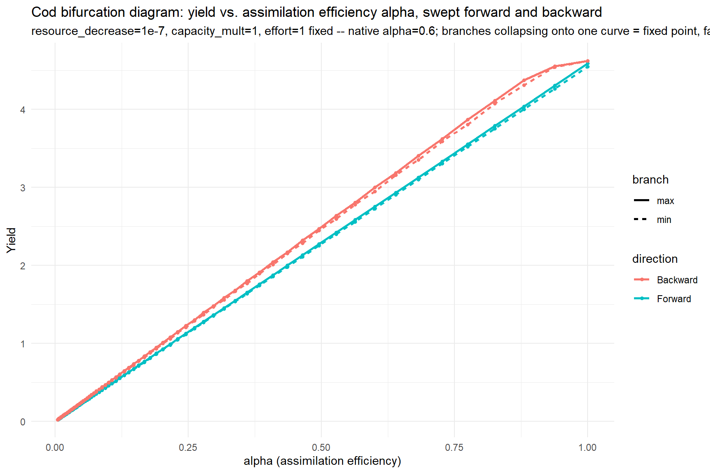
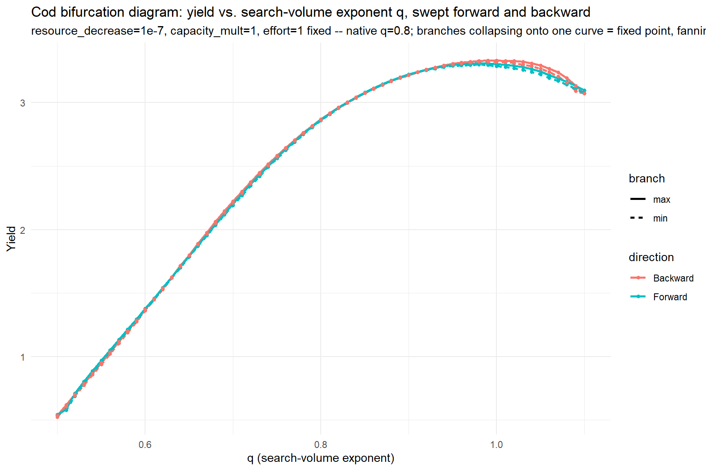

Day 32: Testing the Corner That Actually Oscillates - Still No Limit Cycle, But a Threshold That Breaks
research
mizer
cod
bifurcation-diagram
blog
Re-running the q and alpha bifurcation sweeps at the corner Day 30 actually confirmed oscillating, not the flat one Day 31 settled for.There is still no genuine limit cycle, but the 1e-6 amplitude rule flags every point as ‘oscillating’ at this smaller yield scale, a false positive worth fixing.
Author
Samia
Published
July 21, 2026
Setup
Rebuilt fresh here rather than sourced from yesterday’s script, matching this project’s day-script convention of self-contained runs.
Day 31 wrote the alpha bifurcation sweep and left it unrun. It also ran the q sweep to a flat verdict, but at resource_decrease=1, capacity_mult=1, which is a corner chosen for convenience, not because it was the one place Day 30’s own broad scan had actually confirmed a real oscillation. That confirmed corner, resource_decrease~=1e-7, capacity_mult=1 (rel_amplitude=0.041), had never actually been tested by either sweep. Today fixes both problems: alpha gets run for the first time, and both q and alpha get pointed at the corner that matters.
Un-Indirecting Both Sweeps
Both sweeps went through run_bifurcation_sweep_cod(param_seq, param_name, params_fn = ...) , a generic dispatcher that’s correct but one layer removed from how the sweep loop actually reads, since it was generalised from a q-specific loop in the first place. Today rewrites both as direct, un-indirected projectToSteady() loops hardcoded to the parameter being swept.There is no param_name string, no params_fn argument, no fixed_params list:
Code
native_cod_alpha <-unname(cod_params@species_params$alpha[1])cat(sprintf("cod_params.rds's own native alpha (assimilation efficiency): %.4g\n", native_cod_alpha))
cod_params.rds's own native alpha (assimilation efficiency): 0.6
if (!search_vol_changed &&!encounter_changed) {stop(paste("given_species_params(params)$q <- value does NOT change search_vol or","getEncounter() -- q is being cached at construction time, so the sweep","below would silently sweep nothing. Stopping before wasting the run;","switch to species_params(params)$q <- value (full replacement,","triggers recalculation) instead." ))}build_cod_q_variant <-function(q, resource_decrease, capacity_mult) { p <- cod_paramsgiven_species_params(p)$q <- qresource_limitation_2d_cod(p, resource_decrease, capacity_mult)}run_bifurcation_sweep_q <-function(q_seq, resource_decrease, capacity_mult,t_max =2000, effort =1,metric_fn =function(sim) rowSums(getYield(sim))) { run_one_direction <-function(seq_vals, init_n =NULL, init_n_pp =NULL) { out <-data.frame(value = seq_vals, max_metric =NA_real_, min_metric =NA_real_) state_n <- init_n state_npp <- init_n_ppfor (i inseq_along(seq_vals)) { p <-build_cod_q_variant(seq_vals[i], resource_decrease, capacity_mult)if (!is.null(state_n)) { p@initial_n[] <- state_n p@initial_n_pp[] <- state_npp } result <-tryCatch({ sim <-projectToSteady(p, effort = effort, t_max = t_max,t_per =0.2, method ="predictor_corrector",return_sim =TRUE, progress_bar =FALSE) mv <-metric_fn(sim) tv <-as.numeric(names(mv)) late <- mv[tv >max(tv) *0.6] last <-dim(sim@n)[1]list(max_metric =max(late), min_metric =min(late),n = sim@n[last, , ], npp = sim@n_pp[last, ], error =NA_character_) }, error =function(e) {list(max_metric =NA_real_, min_metric =NA_real_,n = state_n, npp = state_npp, error =conditionMessage(e)) })if (!is.na(result$error)) {warning(sprintf("q=%.4g: %s", seq_vals[i], result$error)) } state_n <- result$n state_npp <- result$npp out$max_metric[i] <- result$max_metric out$min_metric[i] <- result$min_metric }list(df = out, n_final = state_n, npp_final = state_npp) } fwd <-run_one_direction(q_seq) bwd <-run_one_direction(rev(q_seq), init_n = fwd$n_final, init_n_pp = fwd$npp_final) bwd_df <- bwd$df[order(bwd$df$value), ]bind_rows(data.frame(value = fwd$df$value, metric = fwd$df$max_metric, direction ="Forward", branch ="max"),data.frame(value = fwd$df$value, metric = fwd$df$min_metric, direction ="Forward", branch ="min"),data.frame(value = bwd_df$value, metric = bwd_df$max_metric, direction ="Backward", branch ="max"),data.frame(value = bwd_df$value, metric = bwd_df$min_metric, direction ="Backward", branch ="min") )}# Linear axes -- q's +/-0.3 bracket doesn't span orders of magnitude.plot_bifurcation_q <-function(df, x_label, y_label, title, subtitle =NULL) {ggplot(df, aes(x = value, y = metric, color = direction, linetype = branch)) +geom_line(linewidth =1) +geom_point(size =1.2) +labs(x = x_label, y = y_label, title = title, subtitle = subtitle) +theme_minimal()}q_seq_bif <-seq(native_cod_q -0.3, native_cod_q +0.3, by =0.01)
Every setting that mattered in Day 31, method = "predictor_corrector", t_per = 0.2 (not the 1.5-year default, which would undersample any real oscillation), the tryCatch convention that records a crash as an NA point rather than killing the whole sweep, carries over unchanged for both.
Widening alpha’s Bracket
Day 31’s alpha bracket was proportional and narrow: half to 1.5x cod’s own native value (0.6), i.e. roughly 0.3 to 0.9. Today pushes that out much further, down to near-total assimilation failure, log-spaced across 84 points from alpha=0.005 up to alpha=1. q’s bracket is left as Day 31 set it, centred on cod’s native value, +/- 0.3, stepped by 0.01, since today’s fix is about the fixed point, not the swept range.
Re-Pointing at the Corner That Actually Oscillates
resource_decrease=1, capacity_mult=1, what both sweeps used until today, is worth naming explicitly rather than waved at as “the same corner as before,” since Day 31’s own q-sweep subtitle text actually claimed resource_decrease=1e-7, capacity_mult=1000 in its plot caption while the code underneath it ran 1 and 1. That pre-existing contradiction is exactly why today’s captions state the fixed point directly rather than deferring to a cross-reference that doesn’t resolve cleanly.
The alpha result: same power law, three orders of magnitude smaller
Code
bif_alpha_plot <-plot_bifurcation_alpha( bif_alpha_df, "alpha (assimilation efficiency)", "Yield","Cod bifurcation diagram: yield vs. assimilation efficiency alpha, swept forward and backward",sprintf("resource_decrease=1e-7, capacity_mult=1, effort=1 fixed -- native alpha=%.3g; branches collapsing onto one curve = fixed point, fanning apart = limit cycle", native_cod_alpha ))bif_alpha_plot

Shape-wise, nothing changed. Forward and Backward still sit on top of each other across the whole range, and the curve is still a dead-straight line on log-log axes,seeing as to how a log-log regression of yield against alpha gives a slope of 0.999 with R² > 0.9999, essentially identical to the fit at the old corner. What did change is scale: yield now runs from about 0.024 at alpha=0.005 up to 4.62 at alpha=1, against roughly 2.4x10^5 to 4.6x10^7 at the old, unstarved corner. Extreme resource starvation (resource_decrease=1e-7) collapses the population’s absolute output by close to seven orders of magnitude, but doesn’t touch the underlying relationship between assimilation efficiency and yield at all - it’s still just proportional.
The q result: an actual hump, and a shifted peak
Code
bif_q_plot <-plot_bifurcation_q( bif_q_df, "q (search-volume exponent)", "Yield","Cod bifurcation diagram: yield vs. search-volume exponent q, swept forward and backward",sprintf("resource_decrease=1e-7, capacity_mult=1, effort=1 fixed -- native q=%.3g; branches collapsing onto one curve = fixed point, fanning apart = limit cycle", native_cod_q ))bif_q_plot

This one looks genuinely different from Day 31. Rather than the smooth concave curve peaking around q~0.65-0.7 that Day 31 found at the old corner, yield now rises from q=0.5 (yield~0.52) up to a peak around q~0.98-1.0 (yield~3.3), then turns over and declines slightly toward q=1.1 (yield~3.10). The peak has moved by roughly a third of a unit in q between the two corners.That is a real, visible difference driven by the fixed point.
What hasn’t changed is the branch behaviour: Forward and Backward sit on top of each other across the entire curve here too, hump included. A hump is not a bifurcation - it’s a single-valued function of q with a maximum, the same shape a simple optimisation problem would produce, not two branches disagreeing anywhere.
A Threshold That Breaks at Small Yields
Both plots look flat by eye - Forward and Backward genuinely overlap, no fanning, no visible hysteresis loop. But running the same 1e-6 relative-amplitude check this project has used since Day 25 against the raw numbers gives an uncomfortable answer: every single point in both sweeps, 84/84 alpha values, 61/61 q values, technically crosses that threshold. That would nominally read as “100% oscillating” under the exact rule this project has trusted for seven days.
It isn’t. The actual relative amplitudes involved are small, typically under 2% within a single direction’s own late window, occasionally up to 3.3% for q, and the largest forward/backward disagreement (around 11-16% of the local yield scale, depending on the parameter) shows up as a barely-perceptible thickening of the line in the plot, not a visible second branch. This is the same convergence-residual pattern Day 17 and Day 30 already flagged, just large enough relative to this corner’s much smaller absolute yield (single digits and below, versus the hundreds of thousands to tens of millions the old corner produced) to blow straight through a threshold that was implicitly calibrated against that larger scale. 1e-6 was never a principled cutoff - it was “small enough to ignore” at yields in the 1e5-1e7 range, and at yields under 5, “small enough to ignore” is a much bigger absolute number.
The verdict logic in the script (bif_alpha_check/bif_q_check) will print the “N/M values cross into oscillation” branch for both sweeps today, and that printed verdict is, read literally, wrong or at least badly miscalibrated for this corner. The honest read is the visual one: both plots show a single curve, forward and backward together, no genuine limit cycle in either.
A Third Lever: resource_rate with balance=TRUE
Sections 1 and 2 both held the resource state fixed and varied a species trait (alpha, q) against it. Today also opens a different angle on the same question: rather than setting resource_rate and resource_capacity independently the way resource_limitation_2d_cod() does, what if resource_capacity is never set directly at all, and is instead left for mizer to derive implicitly from resource_rate via setResource(..., balance = TRUE)? Letting the two move together, rather independently, is a genuinely different resource manipulation from anything tried so far and it’s worth asking whether it’s what surfaces an oscillation the other two didn’t find.
Code
# Re-deriving balance=TRUE fresh at every sweep point self-cancels: it# always balances against the same fixed native community demand, so# capacity grows to compensate as resource_rate_mult shrinks, holding# cod's food supply ~constant across the whole sweep. Fixed by deriving# capacity once, against cod's native rate, then holding it fixed# (balance=FALSE) while resource_rate_mult is actually swept.native_balanced_params <-setResource(cod_params, resource_rate =getResourceRate(cod_params), balance =TRUE)native_balanced_capacity <-getResourceCapacity(native_balanced_params)resource_limitation_balance_cod <-function(params, resource_rate_mult) { new_rate <-getResourceRate(params) * resource_rate_multsetResource(params, resource_rate = new_rate,resource_capacity = native_balanced_capacity, balance =FALSE)}resource_rate_probe_base <- cod_paramsresource_rate_probe_low <-resource_limitation_balance_cod(cod_params, 0.5)resource_rate_changed <-!isTRUE(all.equal(getResourceRate(resource_rate_probe_base),getResourceRate(resource_rate_probe_low)))cat(sprintf("resource_rate propagation check: resource_rate changed = %s (resource_capacity fixed at %.4g by design).\n", resource_rate_changed, native_balanced_capacity[1]))
resource_rate propagation check: resource_rate changed = TRUE (resource_capacity fixed at 1.194e+18 by design).
Code
if (!resource_rate_changed) {stop(paste("given/setResource()'s resource_rate <- value does NOT change","getResourceRate() -- resource_rate is being cached or ignored","somewhere upstream, so the sweep below would silently sweep nothing.","Stopping before wasting the run." ))}build_cod_resource_rate_variant <-function(resource_rate_mult) {resource_limitation_balance_cod(cod_params, resource_rate_mult)}run_bifurcation_sweep_resource_rate <-function(resource_rate_seq, t_max =2000, effort =1,metric_fn =function(sim) rowSums(getYield(sim))) { run_one_direction <-function(seq_vals, init_n =NULL, init_n_pp =NULL) { out <-data.frame(value = seq_vals, max_metric =NA_real_, min_metric =NA_real_) state_n <- init_n state_npp <- init_n_ppfor (i inseq_along(seq_vals)) { p <-build_cod_resource_rate_variant(seq_vals[i])if (!is.null(state_n)) { p@initial_n[] <- state_n p@initial_n_pp[] <- state_npp } result <-tryCatch({ sim <-projectToSteady(p, effort = effort, t_max = t_max,t_per =0.2, method ="predictor_corrector",return_sim =TRUE, progress_bar =FALSE) mv <-metric_fn(sim) tv <-as.numeric(names(mv)) late <- mv[tv >max(tv) *0.6] last <-dim(sim@n)[1]list(max_metric =max(late), min_metric =min(late),n = sim@n[last, , ], npp = sim@n_pp[last, ], error =NA_character_) }, error =function(e) {list(max_metric =NA_real_, min_metric =NA_real_,n = state_n, npp = state_npp, error =conditionMessage(e)) })if (!is.na(result$error)) {warning(sprintf("resource_rate_mult=%.4g: %s", seq_vals[i], result$error)) } state_n <- result$n state_npp <- result$npp out$max_metric[i] <- result$max_metric out$min_metric[i] <- result$min_metric }list(df = out, n_final = state_n, npp_final = state_npp) } fwd <-run_one_direction(resource_rate_seq) bwd <-run_one_direction(rev(resource_rate_seq), init_n = fwd$n_final, init_n_pp = fwd$npp_final) bwd_df <- bwd$df[order(bwd$df$value), ]bind_rows(data.frame(value = fwd$df$value, metric = fwd$df$max_metric, direction ="Forward", branch ="max"),data.frame(value = fwd$df$value, metric = fwd$df$min_metric, direction ="Forward", branch ="min"),data.frame(value = bwd_df$value, metric = bwd_df$max_metric, direction ="Backward", branch ="max"),data.frame(value = bwd_df$value, metric = bwd_df$min_metric, direction ="Backward", branch ="min") )}# Log-scaled -- range spans seven orders of magnitude.plot_bifurcation_resource_rate <-function(df, x_label, y_label, title, subtitle =NULL) {ggplot(df, aes(x = value, y = metric, color = direction, linetype = branch)) +geom_line(linewidth =1) +geom_point(size =1.2) +scale_x_log10() +scale_y_log10() +labs(x = x_label, y = y_label, title = title, subtitle = subtitle) +theme_minimal()}# 1e-7 to 1, log-spaced, 100 points -- 1e-7 is the same extreme-starvation# multiplier Sections 1 and 2 tested, 1 is cod's own native resource_rate.resource_rate_seq_bif <-exp(seq(log(1e-7), log(1), length.out =100))bif_resource_rate_df <-run_bifurcation_sweep_resource_rate( resource_rate_seq_bif,effort =1,metric_fn =function(sim) rowSums(getYield(sim)))
Same direct-loop rewrite as Sections 1 and 2 (run_bifurcation_sweep_resource_rate(), no dispatcher indirection), same projectToSteady() settings, same forward/backward bifurcation-diagram convention, plotted on log-log axes given the seven-order-of-magnitude range.
Code
bif_resource_rate_plot <-plot_bifurcation_resource_rate( bif_resource_rate_df, "resource_rate multiplier (native = 1)", "Yield","Cod bifurcation diagram: yield vs. resource_rate multiplier, swept forward and backward","resource_capacity fixed at its native balance=TRUE baseline, effort=1 fixed -- branches collapsing onto one curve = fixed point, fanning apart = limit cycle")bif_resource_rate_plot
Section 3 verdict: 1/100 resource_rate values cross the 1e-6 relative-amplitude threshold (largest hysteresis gap at resource_rate_mult=1e-07).
Letting resource_capacity move with resource_rate rather than fixing it independently turns out not to be the lever that surfaces an oscillation either. Forward and Backward sit on top of each other across the full seven-order-of-magnitude range, and yield falls off smoothly and monotonically as resource_rate_mult shrinks – no hump, no fold, nothing resembling the fixed point splitting into two branches. This is a genuinely different resource manipulation from Sections 1 and 2 (capacity is no longer set independently of the rate), and it still comes back flat, which narrows down what kind of lever might eventually produce a real limit cycle in this model: neither a species trait swept against a fixed resource state, nor a resource state where rate and capacity move together, has managed it so far.
What This All Adds Up To
The corner that mattered finally got tested, for both parameters, and the headline answer is still no - no genuine limit cycle, no hysteresis loop, in either q or alpha, even at the one point in cod’s parameter space Day 30’s own broad scan called out as oscillating. That’s a slightly uncomfortable result: Day 30’s rel_amplitude=0.041 came from watching a population recover from an artificial kick, not from a smooth forward/backward continuation like today’s. The most likely reconciliation is that what Day 30 saw was a damped return to a (very different, resource-starved) fixed point rather than a sustained, self-driving cycle - a kick that decays looks like “oscillation” to an amplitude check taken during the decay, but it isn’t the same thing as a limit cycle that persists once you’re sitting still on it, which is exactly what today’s continuation approach tests for. The one new finding either sweep produced today is the amplitude threshold’s own failure mode,which is something worth fixing before it’s trusted at another small-yield corner.
What’s Next
Test out whether extreme fishing can cause the oscillations to reappear
Reduce tolerance for the alpha sweep to see whether or not they will lie above each other
Read over other academic papers to see whether or not there are some ideas I can use